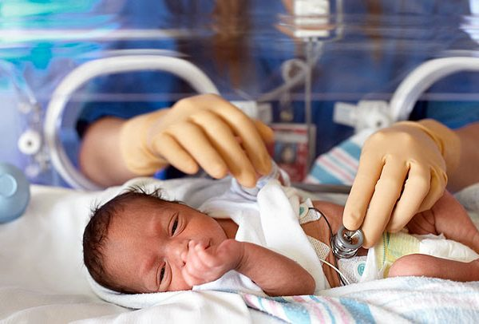

Si su hijo sufre de alergias o de otros problemas del sistema inmunitario, un alergista/inmunólogo pediátrico tiene los conocimientos necesarios para brindarle tratamiento.El sistema inmunitario de su hijo combate las infecciones. Si su hijo tiene alergias, su sistema inmunitario reacciona equivocadamente ante cosas que, normalmente, son inofensivas. Algunos ejemplos son la caspa de las mascotas, el polen, el polvo, las esporas de moho, las picaduras de insectos, los alimentos y los medicamentos. Esta reacción puede hacer que el cuerpo responda con problemas de salud, como asma, fiebre del heno, ronchas, eccema (una erupción) o una reacción inusual y muy grave llamada anafilaxia.
A veces, si el sistema inmunitario de su hijo no funciona correctamente, es posible que sufra infecciones frecuentes, graves y/o poco comunes. Algunos ejemplos de estas infecciones son la sinusitis (inflamación de uno o más senos paranasales), la neumonía (infección de los pulmones), la candidosis bucal (una infección en la boca causada por un hongo) y los abscesos (acumulación de pus rodeada de tejido inflamado), que aparecen una y otra vez.Un alergista/inmunólogo pediátrico descubre y trata estas alergias y problemas del sistema inmunitario.Los alergistas/inmunólogos pediátricos brindan tratamiento a niños desde que nacen hasta la adolescencia.
Su elección de especializarse en alergias e inmunología pediátrica los prepara para brindar la mejor experiencia cuando deben tratar las singulares necesidades de los niños que tienen alergias y problemas en el sistema inmunitario.
Aunque su pediatra puede resolver la mayoría de los problemas de salud de un recién nacido, un especialista en neonatología está específicamente adiestrado para manejar las situaciones más complejas y de alto riesgo. Si su bebé nació prematuro o con una enfermedad, lesión o defecto de nacimiento serio, un especialista en neonatología podría estar presente al momento del parto y durante el cuidado subsiguiente del recién nacido. Si se identifica un problema antes de que nazca su bebé, un especialista en neonatología podría participar, junto con su obstetra, del cuidado del bebé durante su embarazo.Los especialista en neonatología trabajan primordialmente en las salas de cuidados especiales o en las unidades de cuidados intensivos para recién nacidos de los hospitales. En ciertos casos, luego de que un recién nacido ha sido dado de alta de la unidad, un especialista en neonatología puede brindarle seguimiento ambulatorio a corto plazo. El especialista en neonatología coordinará el cuidado del bebé con su pediatra.
Los especialistas en neonatología ejercen en hospitales infantiles, centros médicos universitarios y hospitales comunitarios grandes. Su pediatra u obstetra está en capacidad de remitirlo a un especialista en neonatología en caso de que su bebé recién nacido necesite dicho cuidado especial